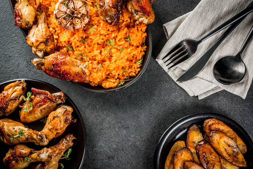

Jollof Rice Recipe

Description
Popular and spicy West African chicken and rice dish.
Ingredients
- ½ pound fresh green beans, trimmed and snapped into 1 to 2 inch pieces
- ¼ teaspoon ground nutmeg
- 1 tablespoon olive oil
- 1 large onion, sliced
- 2 (14.5 ounce) cans stewed tomatoes
- ½ (6 ounce) can tomato paste
- ¼ teaspoon black pepper
- ¼ teaspoon cayenne pepper
- ½ teaspoon red pepper flakes
- 1 tablespoon Worcestershire sauce
- 1 teaspoon chopped fresh rosemary
- 1 teaspoon salt
- cup diced carrots
Steps
- Pour oil into large saucepan. Cook onion in oil over medium-low heat until translucent.
- Stir in stewed tomatoes and tomato paste, and season with salt, black pepper, cayenne pepper, red pepper
flakes, Worcestershire sauce and rosemary. Cover, and bring to a boil. Reduce heat, stir in water, and add
chicken pieces. Simmer for 30 minutes.
- Stir in rice, carrots, and green beans, and season with nutmeg. Bring to a boil, then reduce heat to low.
Cover, and simmer until the chicken is fork-tender and the rice is cooked, 25 to 30 minutes.